Personal builds and team competitions spanning mechatronics, CAD, PCB design, and materials research — pulled from my full engineering portfolio (PDF).
Custom AR glasses that display live subtitles on the lens. Conversation audio is captured, sent via Bluetooth to a phone or laptop for processing, and the resulting text is streamed back to the glasses to display in real time.
The frame was modeled from scratch with side panels and an internal channel to route three wires between the temples — designed in Onshape. The electronics are two hand-assembled PCBs built at UT Austin's makerspace: one for power, one for processing and display, both designed in KiCad over roughly two months, adapting an open-source smart glasses reference design.
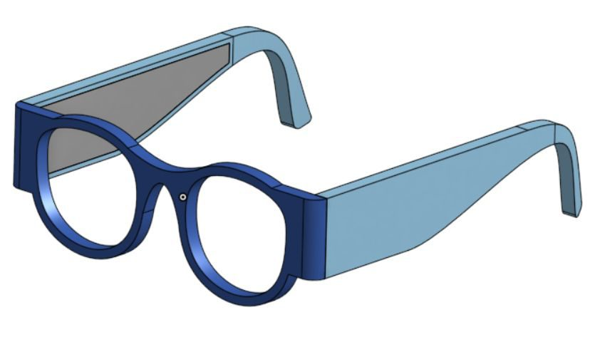
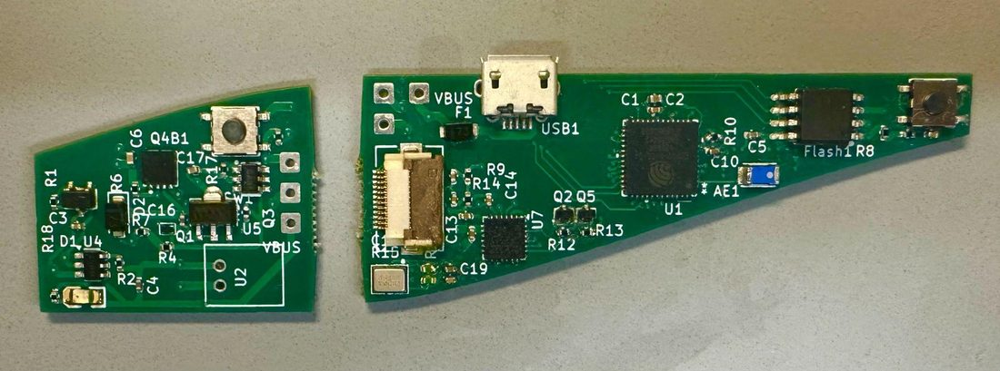
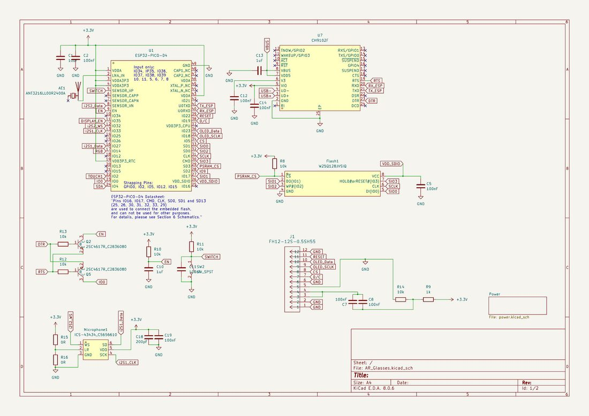
An RC plane built from scratch and flown by tracking hand movements through a PC webcam. Python with OpenCV tracks the joints of my fingers, and the change in joint position controls speed and direction. An Arduino parses that data and sends radio packets to a second Arduino on the plane, which drives the servos.
The body was cut from foam board, and the propellers were 3D printed at Texas Inventionworks, where I serve as Electronics Lead.
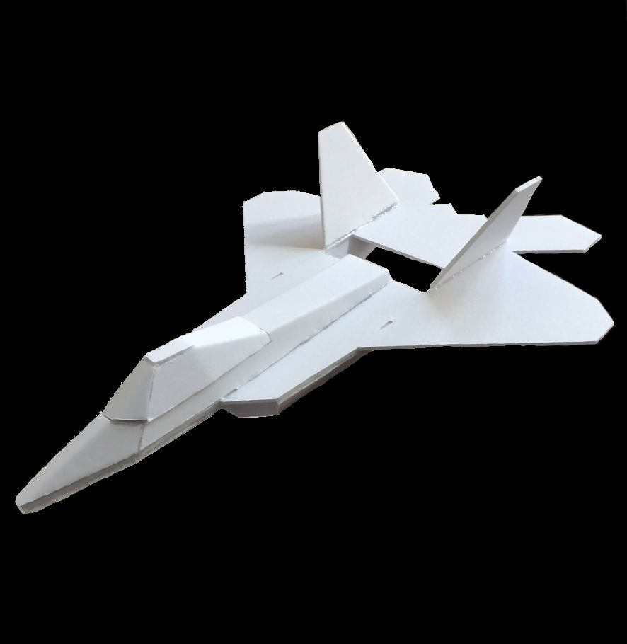
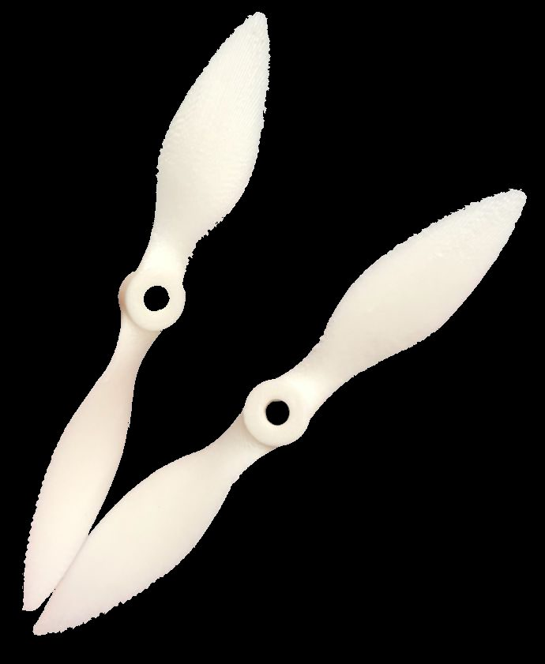
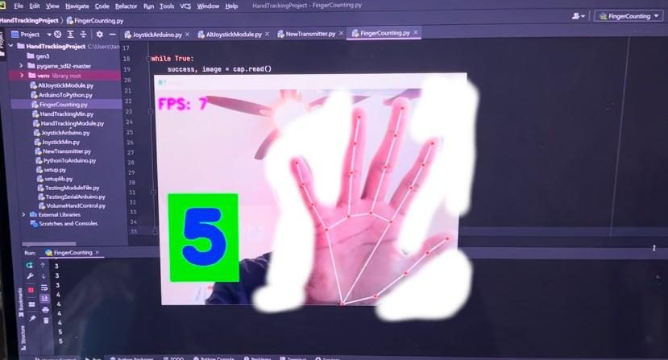
Ran LAMMPS simulations of high strain-rate aluminum nanoparticle collisions to determine optimal impact velocity for applications like micro-cold spray additive manufacturing. Simulations ran on the LoneStar supercomputer; results were visualized in Ovito and consolidated into publication-ready graphs in Excel.
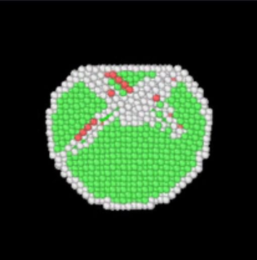
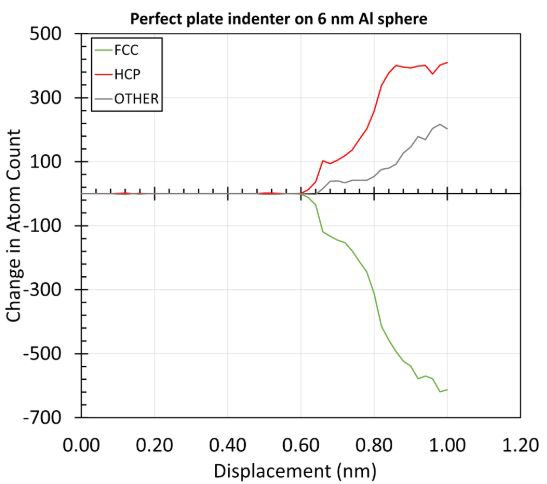
A combat robot built to destroy opponents with a steel spinning weapon and a hardened 3D-printed chassis — ramped surfaces, trusses, fillets, and bearings for durability. The CAD incorporates the weapon, PTEG & TPU chassis, drivetrain, and electronics; the electronics consist of a LiPo battery, ESC, radio transmitter, drive motors, and weapon motor.
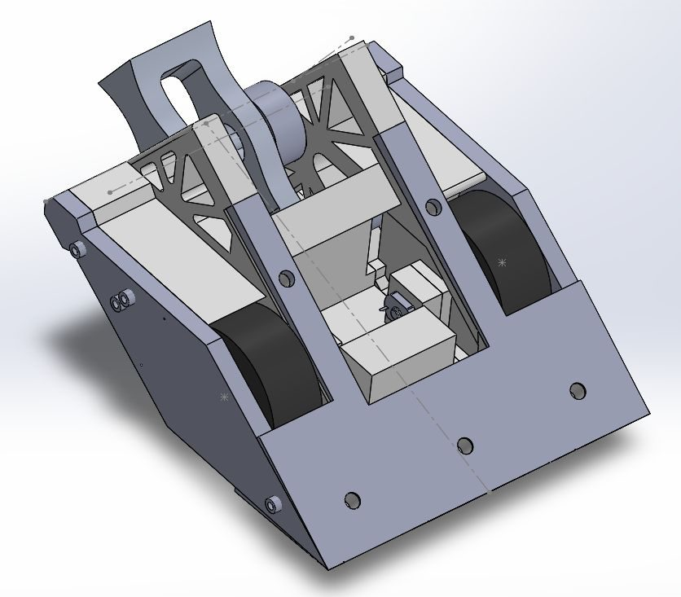
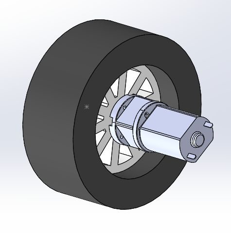
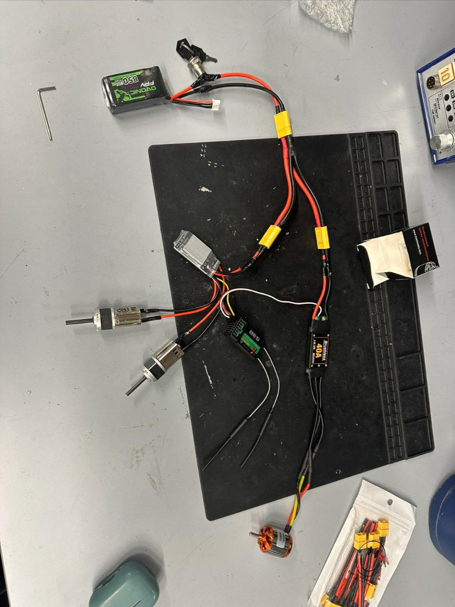
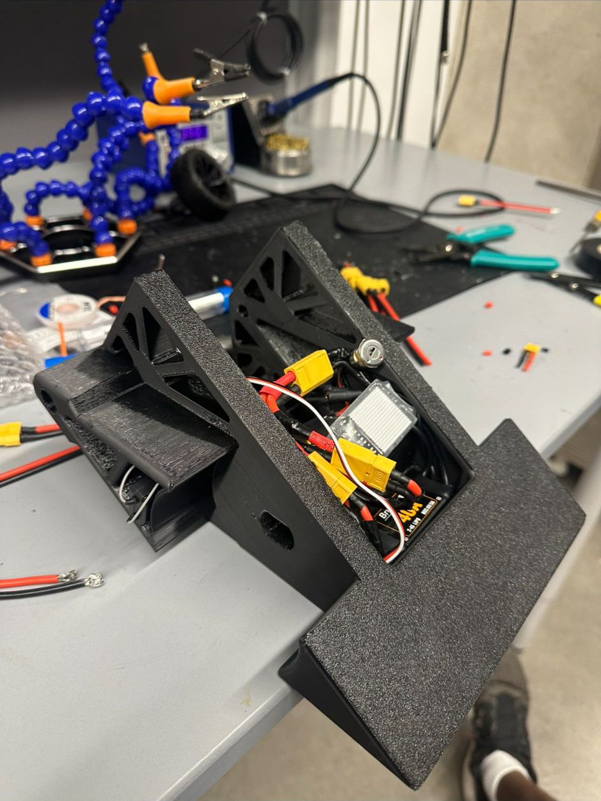
Open to new grad roles and collaborations in mechanical engineering, product design, and mechatronics.